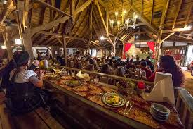
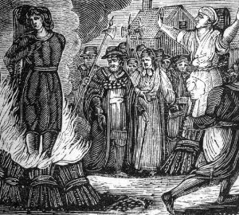
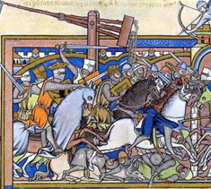
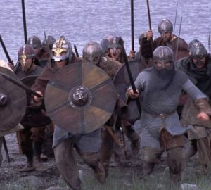
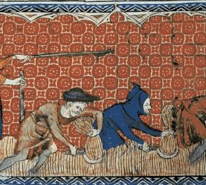

The Irish History Podcast
The Great Famine

This podcast is the first in my new series on the Great Famine and gives a background to Ireland in the 19th century. Entitled ‘Rebel Island’ it focuses on the life of one extraordinary Irish rebel – Anne Devlin. She lived a remarkable life and was involved in the 1798 and 1803 rebellions. These reshaped Ireland and had profound consequences impacting life right up to and during the Great Famine.
Food in Medieval Ireland
Many of the foods you will eat on Christmas day were unknown to medieval Europeans. Turkey, cranberries and even potatoes only arrived in Europe after the conquest of the Americas began. This podcast looks at the world of medieval food to see at what was available.
You will be surprised at the variety of food in medieval Ireland (if you had the money). This show also looks at the strange, lethal and somewhat scary world of takeaway food in medieval Ireland.
Ireland First Witch Burning
On November 2nd 1324, Petronilla of Meath, one of 12 people charged with witchcraft in Kilkenny was burned at the stake in the town. She was the first person to suffer this horrendous fate in Irish history. In this festively themed podcast I trace the story behind this fascinating case and those accused and convicted of witchcraft. What actually happened in Kilkenny in 1324? Was Petronilla of Meath a witch? And what were medieval witches supposed to have done anyway?
The 1317 Siege of Dublin
n February 1317 Dublin faced its greatest crisis. A huge army lead by Robert the Bruce, the victor of Bannockburn, was making its way to lay siege to the city. There was no Norman army to save Dublin. The city’s inhabitants were effectively on their own
However everyone in the city could not be trusted, a few days earlier the Earl of Ulster who also happened to be Bruce’s father in law arrived in the city supposedly fleeing the Scots. What happened next is one the deadliest and strangest events in Dublin history. Set to the backdrop of famine this episode explores the history of one of Dublins darkest periods.
The Vikings Arrive
This shows looks at the arrival of one of the most fearsome and notorious warriors in Irish history – the Vikings. These Scandinavians have been caricatured throughout the centuries as marauding maniacs a somewhat undeserved reputation. However in this episode they don’t exactly cover themselves in glory.
The show will reveal what drove people in Scandinavia to launch what were terrifying raids, how these raiders reached Ireland and then before the episode ends we will join them for their onslaught on Irish monasteries.
Medieval Ireland – Was there ever any good old days?
Most of the podcasts I make focus on the darker aspects of medieval life. War is a common theme and famine is never far away. In this podcast I am asking the question was life in medieval Ireland ever anything other than an endless struggle for survival.
To start the show we look at the Vale of Dublin in 1326 when the region was almost an apocalyptic wasteland before turning the clock back to 1234 and taking a look at the region in its better days.